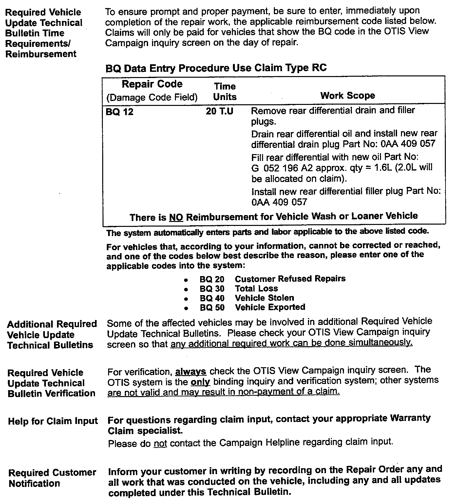
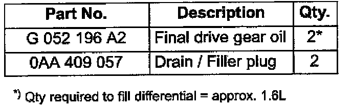
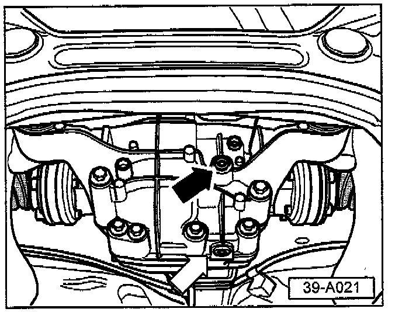

Campaign - Rear Differential Fluid Change
Group: 39Number: 05-01
Date: Apr. 27, 2005
Subject:
Rear Differential, Required Oil Change (BQ)
Model(s):
Touareg with Differential Lock 2004 (see VIN Below)
Instructions:
Perform this procedure on all applicable vehicles within the Limited New Vehicle Warranty.
Tip:
This Technical Bulletin is in effect for 12 months from date of publication as listed above. After that date, this Technical Bulletin will expire and no longer be in effect.
Condition
Required rear final drive differential gear oil change
Production
For vehicles (with differential lock) in:
U.S.A. from 7L_4D000014 to 7L_4D060119
Canada from 7L_4D000039 to 7L_4D059806
Service Requirements:
Vehicle must meet ALL of the following criteria.

1. Procedure is valid only for vehicles that show the "BQ" code in the OTIS View Campaign inquiry screen on the day of repair as shown.
2. Vehicle must be within the Limited New Vehicle Warranty.
3. Procedure must be performed within the allotted time frame stated in this Technical Bulletin.
Tip:
Procedure must also be performed on applicable vehicles in Dealer inventory.

Parts Required
Procedure:
Change oil on rear final drive with differential lock as follows:

- Remove rear final drive drain plug -black arrow- and drain oil.
- Remove gear oil inspection (filler) plug -black arrow-
With oil drained:
- Install new drain plug Part No: 0AA 409 057 -white arrow-.
Tightening torque = 35 Nm.
- Fill' gear oil (approx. 1.6L).
^ Oil level is correct when the rear final drive is filled to lower edge of filler hole at -black arrow-.
With oil filled to proper level:
- Install new filler plug -black arrow-.
Tightening torque = 35 Nm.